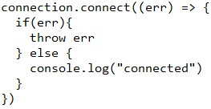
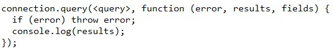
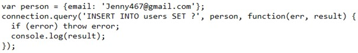
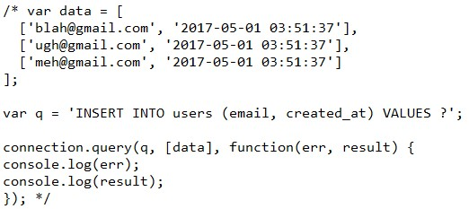
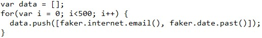

NodeJS
Az oldal tartalma
Néhány parancs
VSC-ben:
- cd -> current directory
- cd .. - visszalépés 1 mappával
- cd ../.. - visszalépés 2 mappával
- cd utána tab -> a lehetséges mappákat adja meg (többször nyomjuk, akkor más mappát ad meg)
- node {filename} -> a js futtatása
- shift+alt+a -> többsoros komment
MySQL-ben:
- ctrl + / - többsoros komment
FAKER package - fake adatokat tudunk vele generálni
- Fake adatok generálása: FAKER package segítségével
- FAKER használatához: const { faker } = require('@faker-js/faker');
- Dokumentáció [GitHub] [FakerJS]
- faker.internet.email() -> random email-cím
- faker.date.past() -> random dátum a múltban
MySQL package dokumentáció: [GitHub]
MySQL-re csatlakozás NodeJS-sel
1. lépés: telepíteni a MySQL packaget a terminálon keresztül: npm install mysql (vagy npm init --y, aztán npm install --save mysql)
2. lépés: csatlakozáshoz megadni
var mysql = require('mysql');

3. lépés: ellenőrizni a csatlakozást
3a. lépés: amennyiben nem sikerül csatlakozni úgy MySQL-ben az alábbi kódot adjuk meg:
ALTER USER 'username'@'host' IDENTIFIED WITH mysql_native_password BY 'password';
3b. lépés: amennyiben nincs ilyen felhasználó, létre kell hozni:
CREATE USER `username` IDENTIFIED BY "username";
3c. lépés: kérdezzük le, melyik hoston van az adott felhasználó
SELECT user, host FROM mysql.user;
Lekérdezések NodeJS-ben - alapok
A lekérdezés általános formája:
connection.end();
Az eredményt háromféleképp írathatjuk ki:
- results - ekkor egy tömböt kapunk, ahol a tömb egy eleme a lekérdezés során kapott eredmény egy sora
- results[0] - ekkor elhagyjuk a tömböt és a tömb első elemét kapjuk vissza (tehát a lekérdezés során kapott eredmény első sorát)
- results[0].answer - ekkor az eredmény egy mezőjére utalunk és csak annak a mezőnek az értékeit kapjuk vissza
A lekérdezést célszerű egy külön változóba elmenteni (célszerű ennek q nevet adni), és ezt a változót adjuk meg a lekérdezés helyett.
Az adatok tárolása
1. megközelítés
Az adatokat úgyis hozzá tudjuk adni az adatbázishoz, mint az SQL-ben.
var q = 'INSERT INTO users(email) VALUES ("wyatt_the_dog@gmail.com")';
Ennek a megközelítésnek az a hátránya, hogy manuálisan tudjuk csak hozzáadni az adatokat, dinamikusan nem, amire szükségünk van, ha például a FAKER-t szeretnénk használni.
2. megközelítés
Az adatokat objektumokban tároljuk és az objektumokat adjuk hozzá az adatbázishoz
Ezzel már tudunk dinamikusan hozzáadni adatokat is, viszont a probléma az itt is, hogy minden egyes adatot objektumként kellene megadni, ami bizonyos esetekben komplikált.
3. megközelítés
Az összes adatot tömbként ábrázoljuk és minden adatot tömbként kezelünk úgy, hogy a tömb egyes eleme az adott mezőhöz tartozó értéke.
Ezzel a megközelítéssel sokkal könnyebb dolgozni, ugyanis ha random generálunk adatot, akkor 1 sor kóddal (amivel az adatokhoz tartozó tömböket a másik tömbbe pusholjuk) és egy for ciklussal fel tudjuk tölteni az adatbázisunkat.
